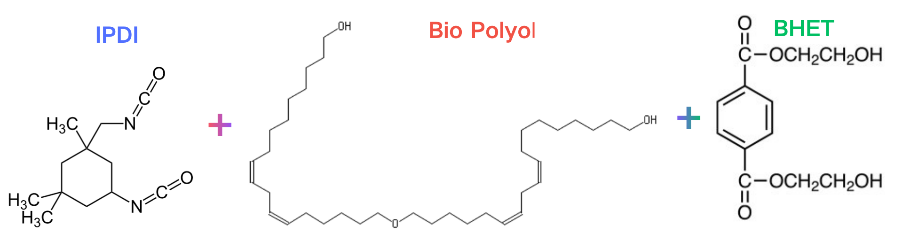

Green TPU
NotePart 1: Synthesis of Green TPU
1. Green TPU Synthesis and Preparation
1.1 Synthetic Route & Raw Material Selection
- Monomer System:
- Diisocyanate: Isophorone diisocyanate (IPDI) was selected to synthesize the prepolymer. Although bio-based diisocyanates with five-membered rings are available, IPDI was chosen for its optimal balance of reactivity and performance.
- Polyol: Pure bio-based polyol (Bio Polyol) was reacted with IPDI to form the soft-segment prepolymer.
- Chain Extender: Purified BHET (obtained from prior PET depolymerization) was utilized as the green chain extender.
- Hardness Tuning (S20 & H40):
- By adjusting the stoichiometric ratio of hard and soft segments, Green TPU products with tailored mechanical properties and varied hardness can be achieved.
- S20 and H40 correspond to Shore D hardness values of 20 and 40, respectively.

- Figure 1: Reaction scheme showing IPDI, Bio Polyol, and BHET.
1.2 Structural Verification via FTIR Spectroscopy
- Prepolymer Formation (IPDI + Bio Polyol):
- As shown in the FTIR spectra, the characteristic absorption peak of the free \(-\text{N=C=O}\) group appears around \(2243\,\text{cm}^{-1}\) and \(2252\,\text{cm}^{-1}\), confirming the successful formation of the isocyanate-terminated prepolymer.
- The appearance of peaks at \(3328\,\text{cm}^{-1}\) (\(\text{N-H}\) stretching of amide A), \(1698\,\text{cm}^{-1}\) (\(\text{C=O}\) stretching), \(1517\,\text{cm}^{-1}\) (\(\text{N-H}\) bending of amide II), and \(1237\,\text{cm}^{-1}\) (\(\text{N-H}\) bending of amide III) indicates urethane linkage formation.


Figure 2 & 3: Comparative FTIR spectra monitoring the prepolymerization and chain-extension stages.
- Final TPU Product (Prepolymer + BHET):
- The comparison between the prepolymer and the final TPU product demonstrates the consumption and reaction of the \(-\text{N=C=O}\) peak (drastically reduced or vanished at \(2240\,\text{cm}^{-1}\)).
- Characteristic ester carbonyl stretching (\(\sim 1712\,\text{cm}^{-1}\)) and ether/ester linkages from the BHET chain extender (\(1248\,\text{cm}^{-1}\), \(1065\,\text{cm}^{-1}\)) are successfully incorporated into the final Green TPU backbone.
TipPart 3: Mechanical Properties
3. Mechanical Performance and Stress-Strain Behavior
3.1 Tensile Strength and Modulus Comparison
- Raw Material Influence & Tuning Potential:
- Due to the specific nature of the IPDI and bio-polyol system compared to commercial PPF-TPUs, the tensile strength differs from conventional high-performance aliphatic/aromatic automotive film TPUs. However, the initial modulus can remain quite comparable.
- Adjusting the raw material types or modifying the structural formulation can easily broaden the tensile strength window to meet various industrial standards.
- Special Functional Requirements:
- The selection of IPDI is primarily driven by superior optical performance, weatherability, and specific cross-linking demands rather than chasing raw high tensile strength alone.

- Figure 6: Tensile stress-strain curves comparing commercial PPF-TPU with S20 and H40 Green TPU (with inset showing initial strain behavior).
3.2 Extraordinary Elongation at Break in S20
- Record-Breaking Stretchability:
- The most striking feature of the S20 formulation is its extraordinary elongation at break, which exceeds 4000%.
- This level of ultra-high deformability is virtually unprecedented in standard engineering TPU materials—even high-toughness commercial TPU grades rarely exceed \(1000\%\) elongation.
- Structural Implication:
- The combination of soft bio-polyol segments and network architecture allows for extreme chain extension and segment alignment without premature rupture, offering unique potential for applications requiring extreme stretch, strain absorption, or soft-elastic behavior.
TipPart 4: Optical Properties
4. Optical Performance and Transmittance Analysis
4.1 High Transparency and Full-Spectrum Transmittance
- Optical Clarity:
- The synthesized Green TPU exhibits exceptional optical transparency across the visible light spectrum (\(400 - 700\,\text{nm}\)).
- Transmittance Evaluation:
- As measured by the UV-Vis transmission spectra, the composite structure maintains high luminous transmittance, making it highly suitable for optical-grade applications, display shields, and clear protective layers.

- Figure 7: Light transmittance spectra comparing \(25\,\mu\text{m}\) bare PET with the \(25\,\mu\text{m}\) PET + \(80\,\mu\text{m}\) Green TPU composite film.
4.2 Remarkable Anti-Reflective and Enhancing Effect
- Unexpected Optical Enhancement:
- Intriguingly, when the Green TPU is laminated or composited with the PET film, the resulting system exhibits a pronounced anti-reflective and optical-enhancing effect.
- Performance Superiority:
- The transmittance curve of the composite film (red line) consistently surpasses that of the pristine \(25\,\mu\text{m}\) PET substrate (black line) across almost the entire visible spectrum. This unique synergy highlights the excellent refractive index matching and potential optical anti-glare/enhancement functions of this bio-based material system.